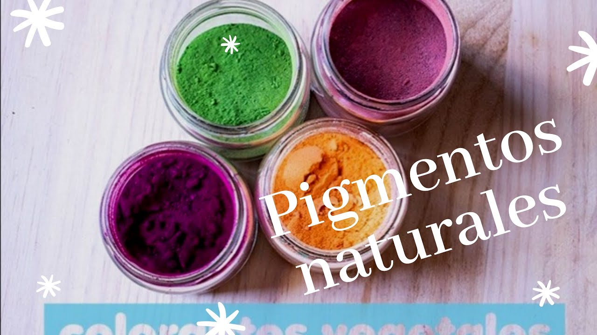

olá meu nome é irailza
3 ml de álcool
0,5 ml de glicerina vegetal
Pigmento mineral vermelho
Pigmento mineral marrom
1 grama de goma xantana
20 ml de água potável
0,5 ml de conservante Cosgard
Um recipiente para guardar
No recipiente, adicione o álcool, a glicerina vegetal e 7 pitadas de pigmento mineral vermelho; Feche e misture bem até o pigmento se dissolver. Mais tarde, se você quiser que a cor mude, adicione pitadas do pigmento marrom e adicione a goma xantana e agite novamente. Por fim, adicione a água e o conservante e misture mais uma vez. Para aplicá-lo, faça-o com os dedos ou com um pincel de maquiagem para lábios.
